{kind=link}
npreg glu bp skin bmi ped age type
1 5 86 68 28 30.2 0.364 24 No
2 7 195 70 33 25.1 0.163 55 Yes
3 5 77 82 41 35.8 0.156 35 No
4 0 165 76 43 47.9 0.259 26 No
5 0 107 60 25 26.4 0.133 23 No
6 5 97 76 27 35.6 0.378 52 Yes05 Daten visualisieren
2026-06-22
Lernziele
Nach diesem Kapitel können Sie …
- einfache Grafiken mit Base R und ggplot2 erstellen,
- den Unterschied zwischen explorativer und erklärender Visualisierung beschreiben,
- die Grundidee der Grammar of Graphics erklären,
- Variablen auf visuelle Eigenschaften abbilden,
- passende Diagrammtypen auswählen,
- Farben, Facetten, Achsen, Themes und Speichern gezielt einsetzen,
- einfache Netzwerkvisualisierungen erstellen.
Warum Daten visualisieren?
Visualisierungen helfen bei zwei Aufgaben:
Exploration
Muster, Ausreißer, Gruppenunterschiede und Zusammenhänge erkennen.Kommunikation
Eine Datenbotschaft klar, verständlich und ehrlich darstellen.
Warum Daten visualisieren?
Beispiele
https://jumpingrivers.github.io/datasauRus/index.html
https://de.wikipedia.org/wiki/Anscombe-Quartett#/media/Datei:Anscombe’s_quartet_3.svg
Typische Fragen an Daten
- Wie ist eine Variable verteilt?
- Gibt es Ausreißer?
- Hängen zwei Variablen zusammen?
- Unterscheiden sich Gruppen?
- Gibt es nichtlineare Muster?
- Gibt es Strukturen, die in Tabellen schwer erkennbar sind?
Beispieldatensatz: Pima.tr
Wir verwenden den Datensatz Pima.tr aus dem Paket MASS.
Er enthält medizinische Messwerte, unter anderem:
| Variable | Bedeutung |
|---|---|
glu |
Glukosewert |
bp |
Blutdruck |
bmi |
Body-Mass-Index |
age |
Alter |
type |
Diabetesstatus |
Daten laden
Struktur prüfen
'data.frame': 200 obs. of 8 variables:
$ npreg: int 5 7 5 0 0 5 3 1 3 2 ...
$ glu : int 86 195 77 165 107 97 83 193 142 128 ...
$ bp : int 68 70 82 76 60 76 58 50 80 78 ...
$ skin : int 28 33 41 43 25 27 31 16 15 37 ...
$ bmi : num 30.2 25.1 35.8 47.9 26.4 35.6 34.3 25.9 32.4 43.3 ...
$ ped : num 0.364 0.163 0.156 0.259 0.133 ...
$ age : int 24 55 35 26 23 52 25 24 63 31 ...
$ type : Factor w/ 2 levels "No","Yes": 1 2 1 1 1 2 1 1 1 2 ...Note
Bevor eine Grafik erstellt wird, sollte immer klar sein: Welche Variablen sind metrisch? Welche sind kategorial?
Ausgangsfrage
Gibt es in diesen Daten einen Zusammenhang zwischen Alter, Glukosewert und Diabetesstatus?
Diese Frage lässt sich mit Tabellen nur schwer schnell beantworten.
Visualisierungen helfen, erste Muster sichtbar zu machen.
Base R
Base R: schnelle Explorationsgrafiken
Base R enthält bereits viele Grafikfunktionen.
Vorteile:
- direkt verfügbar,
- schnell für erste explorative Analysen,
- gut für einfache Standardgrafiken.
Grenze:
- komplexere Grafiken werden schnell schwer lesbar im Code.
Base R: Histogramm
Ein Histogramm zeigt die Verteilung einer metrischen Variable.
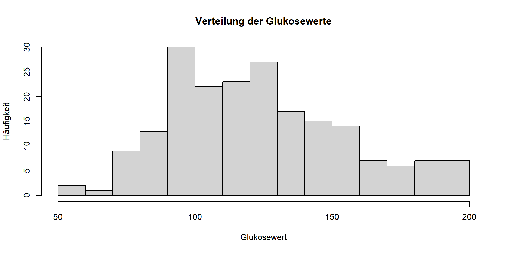
Base R: Boxplot
Ein Boxplot zeigt Median, Quartile und mögliche Ausreißer.
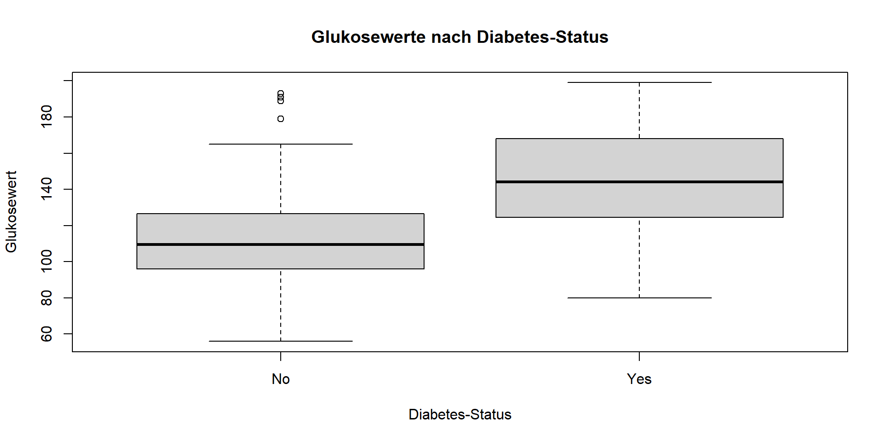
Base R: Streudiagramm
Ein Streudiagramm zeigt den Zusammenhang zwischen zwei metrischen Variablen.
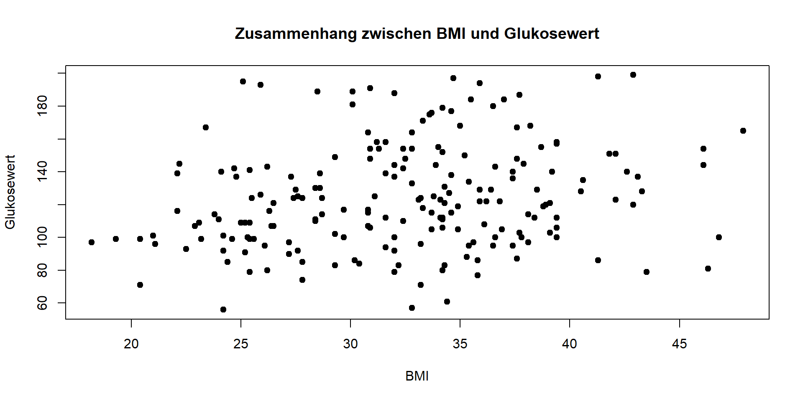
Base R: Gruppen farblich markieren
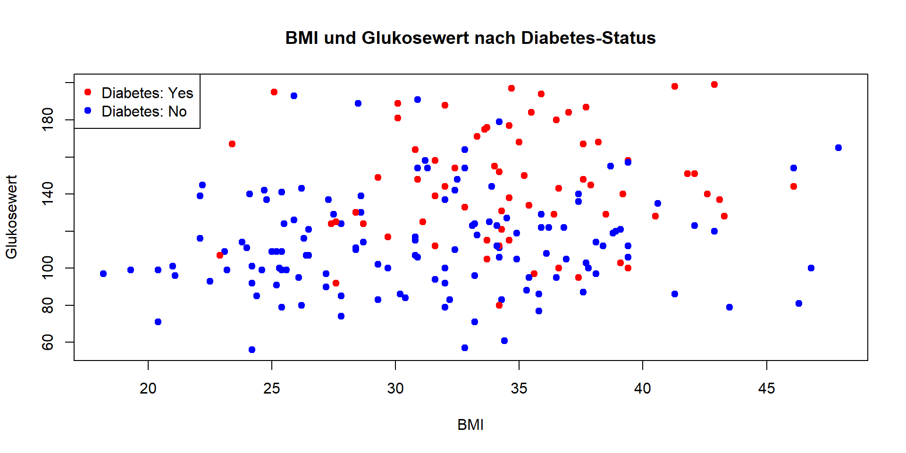
Base R: Dichteplot
Ein Dichteplot ist eine geglättete Alternative zum Histogramm.
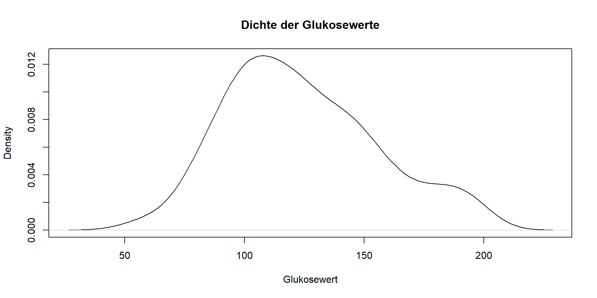
Base R: mehrere Grafiken nebeneinander
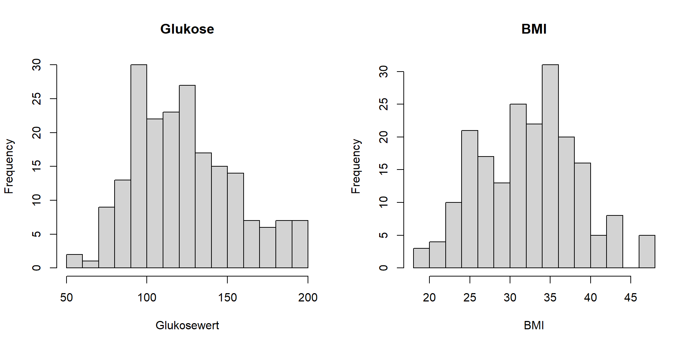
Base R: Korrelationsmatrix
Eine Korrelationsmatrix zeigt lineare Zusammenhänge zwischen metrischen Variablen.
npreg glu bp skin bmi ped age
npreg 1.00 0.17 0.25 0.11 0.06 -0.12 0.60
glu 0.17 1.00 0.27 0.22 0.22 0.06 0.34
bp 0.25 0.27 1.00 0.26 0.24 -0.05 0.39
skin 0.11 0.22 0.26 1.00 0.66 0.10 0.25
bmi 0.06 0.22 0.24 0.66 1.00 0.19 0.13
ped -0.12 0.06 -0.05 0.10 0.19 1.00 -0.07
age 0.60 0.34 0.39 0.25 0.13 -0.07 1.00Base R: Heatmap der Korrelationen
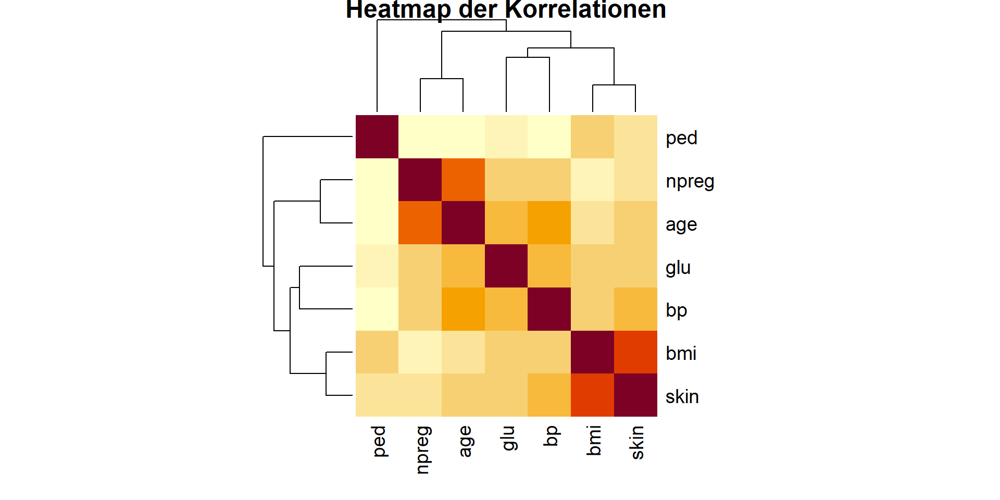
Übung: Base R
Nutzen Sie Pima.tr.
- Erstellen Sie ein Histogramm für
age. - Erstellen Sie einen Boxplot für
bminachtype. - Erstellen Sie ein Streudiagramm für
ageundglu. - Färben Sie die Punkte nach
typeein. - Berechnen Sie eine Korrelationsmatrix für alle metrischen Variablen.
ggplot2
Von Base R zu ggplot2
Base R beschreibt häufig, wie etwas gezeichnet wird.
ggplot2 beschreibt stärker, welche Variablen wie dargestellt werden.
Grundidee:
Eine Grafik wird aus Bausteinen zusammengesetzt.
ggplot2 laden
Ein einfaches Streudiagramm:

Grammar of Graphics
Eine Grafik besteht aus mehreren Komponenten:
| Komponente | Bedeutung |
|---|---|
| Daten | Datensatz |
| Ästhetiken | Zuordnung von Variablen zu visuellen Eigenschaften |
| Geometrien | Punkte, Linien, Balken, Boxplots … |
| Skalen | Achsen, Farben, Größen |
| Facetten | Teilgrafiken nach Gruppen |
| Theme | Gestaltung der Grafik |
Grundform von ggplot2
Grundform von ggplot2
Beispiel:
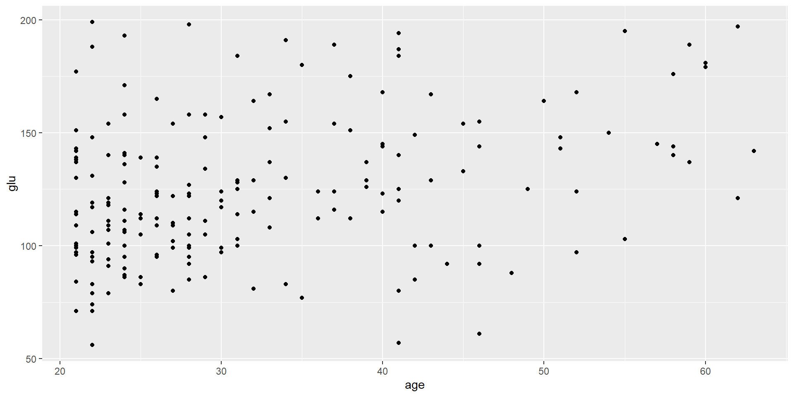
Ästhetiken: aes()
aes() legt fest, welche Variable auf welche visuelle Eigenschaft abgebildet wird.
Ergebnis
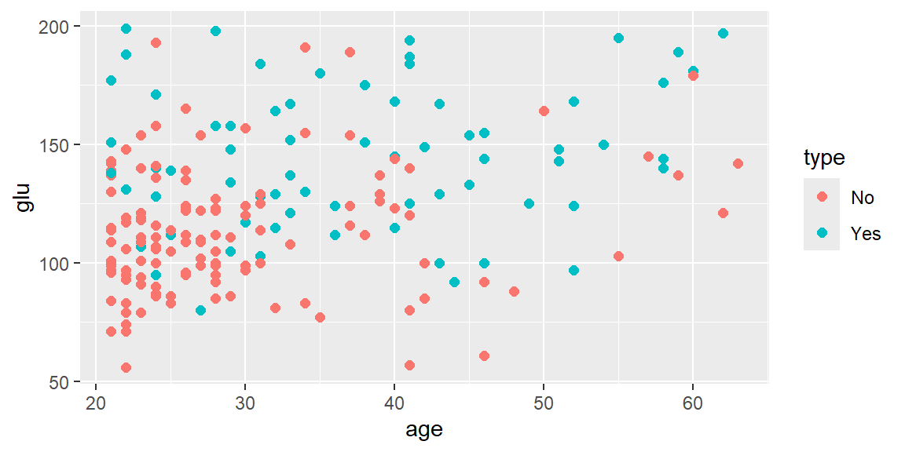
Innerhalb oder außerhalb von aes()?
Variable Farbe nach Gruppe:
Konstante Farbe für alle Punkte:
Geometrien: Darstellungsform wählen
| Ziel | Geometrie |
|---|---|
| Zusammenhang zweier metrischer Variablen | geom_point() |
| Verlauf über eine geordnete Variable | geom_line() |
| Verteilung einer Variable | geom_histogram() |
| geglättete Verteilung | geom_density() |
| Gruppenvergleich metrischer Werte | geom_boxplot() |
| Häufigkeiten | geom_bar() |
| bereits aggregierte Werte | geom_col() |
Punktdiagramm
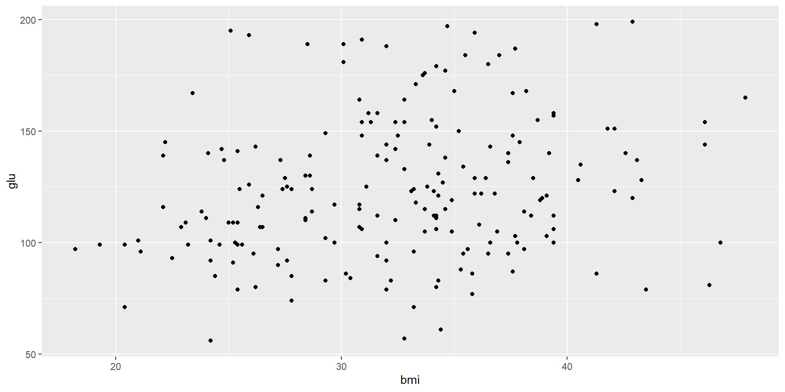
Interpretation: Jeder Punkt steht für eine Person.
Histogramm mit ggplot2
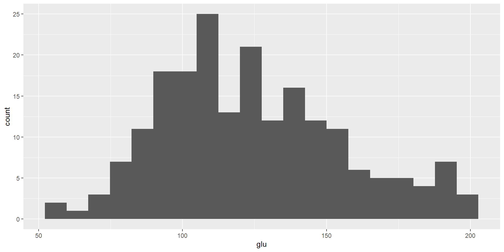
Histogramm mit ggplot2
bins legt fest, in wie viele Klassen die Werte eingeteilt werden.
Boxplot mit ggplot2
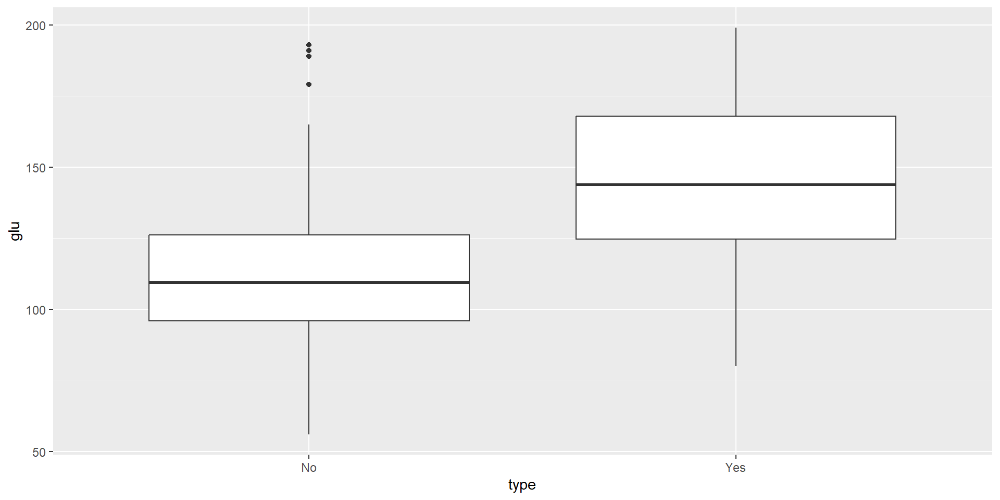
Layer: Grafiken schrittweise aufbauen
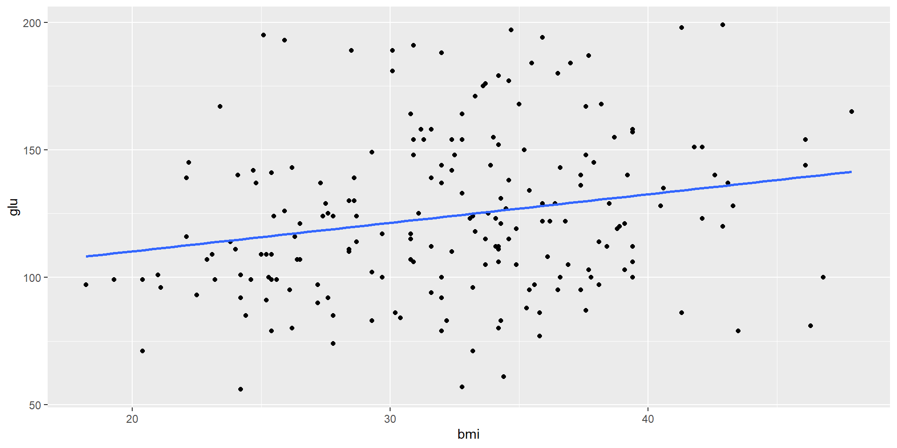
Layer: Grafiken schrittweise aufbauen
Note
Jede zusätzliche Ebene sollte eine inhaltliche Funktion haben.
Achsen und Transformationen
Manchmal sind transformierte Achsen besser lesbar.
scale_y_continuous() passt die y-Achse für numerische Werte an, zum Beispiel die Beschriftung, den Wertebereich oder die Achsenmarkierungen.
Achsen und Transformationen
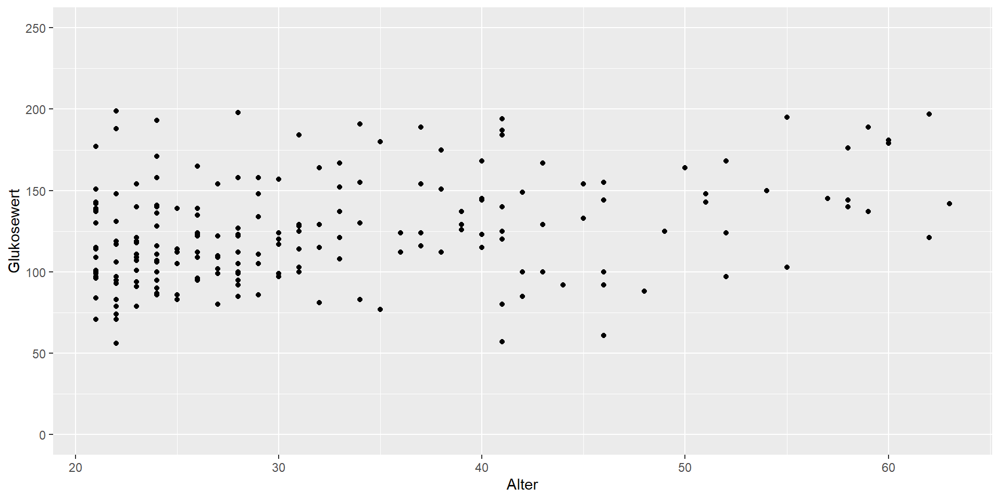
Gruppierung mit Farbe
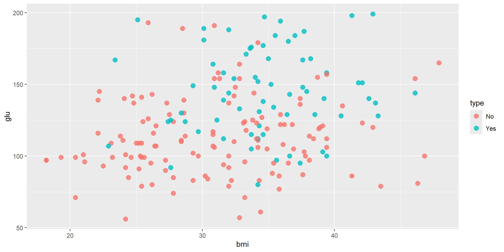
alpha steuert die Transparenz der Punkte.
Balkendiagramme
Häufigkeiten zählen:
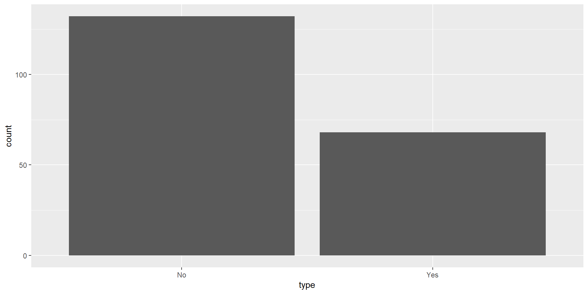
Balkendiagramm mit aggregierten Daten
Balkendiagramm mit aggregierten Daten
Balkendiagramm mit aggregierten Daten
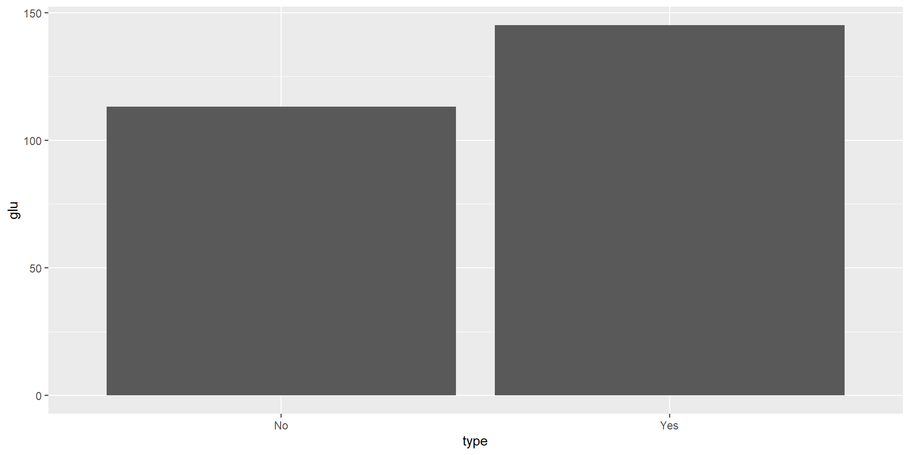
Balkendiagramme
Warning
geom_bar() zählt Beobachtungen.
geom_col() nutzt bereits vorhandene y-Werte.
Faceting
Facetten teilen eine Grafik in mehrere Teilgrafiken auf.
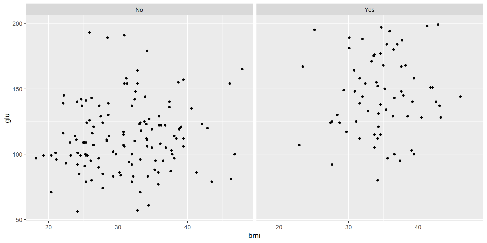
Gut geeignet, wenn Gruppen getrennt betrachtet werden sollen.
Beschriftungen und Titel
Beschriftungen und Titel
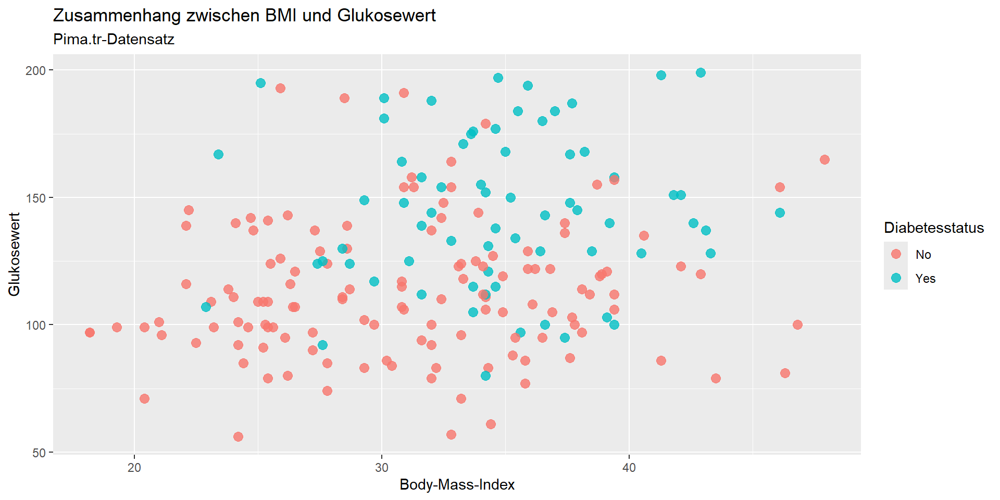
Themes
Themes verändern das Erscheinungsbild einer Grafik.
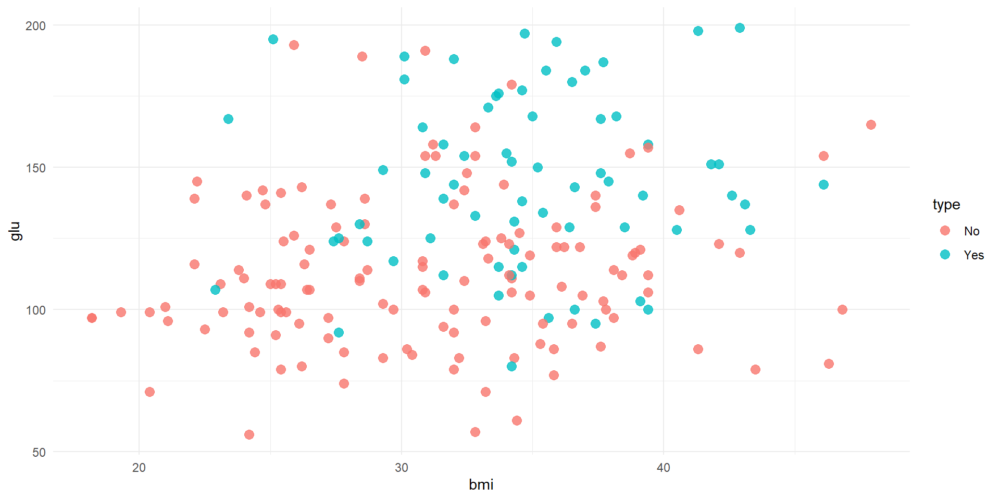
Wichtige Themes in ggplot2
Beispiele:
theme_minimal()→ schlicht und moderntheme_classic()→ klassische Achsen ohne Hintergrundgittertheme_bw()→ weißer Hintergrund mit Gitternetztheme_light()→ helles, dezentes Themetheme_void()→ fast keine Achsen oder Beschriftungen
Wichtig: Themes verändern nur das Aussehen, nicht die Daten.
Eine Grafik schrittweise verbessern
Eine Grafik schrittweise verbessern

Erste Version: Die Daten sind sichtbar, aber noch wenig erklärt.
Schrittweise verbessern: Farbe und Transparenz
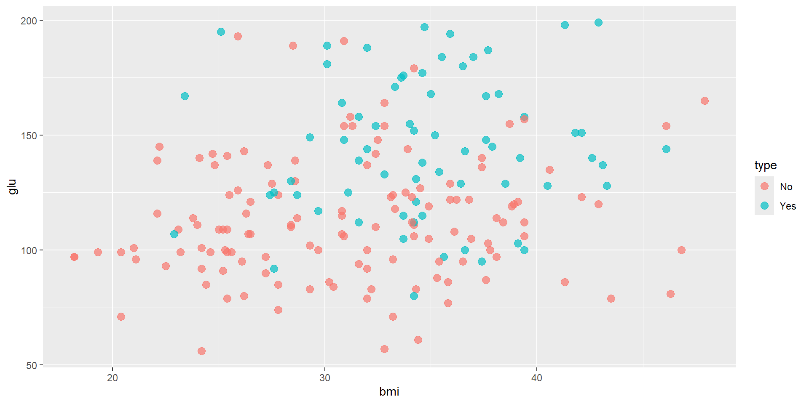
Jetzt werden Gruppenunterschiede sichtbarer.
Finale Version
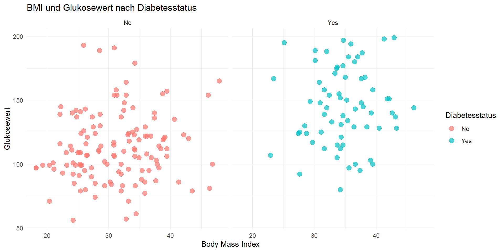
Was macht eine gute Grafik aus?
Tip
Eine gute Grafik sollte nicht überladen sein. Jedes zusätzliche Element sollte eine Funktion haben.
Sinnvolle Verbesserungen sind zum Beispiel: - aussagekräftige Achsenbeschriftungen, - erklärender Titel, - verständliche Legende, - passende Farben, - Transparenz bei vielen Punkten, - Facetten für Gruppenvergleiche, - zurückhaltendes Theme.
ggplot2 Fehler
Typische Fehler bei ggplot2
Fehler 1: + vergessen
Richtig:
Typische Fehler: aes() falsch verwenden
Variable innerhalb von aes():
Konstante außerhalb von aes():
Typische Fehler: geom_bar() vs. geom_col()
Grafiken speichern
Note
Für Abgaben oder Berichte sollten Grafiken reproduzierbar gespeichert werden.
Übung: ggplot2
Erstellen Sie mit ggplot2 Grafiken zum Datensatz Pima.tr.
- Streudiagramm:
agegegenglu. - Färben Sie die Punkte nach
type. - Verändern Sie Punktgröße und Transparenz.
- Ergänzen Sie Titel und Achsenbeschriftungen.
- Teilen Sie die Grafik mit
facet_wrap(~ type)auf. - Speichern Sie die finale Grafik mit
ggsave().
Netzwerkvisualisierung
Netzwerkvisualisierung
Netzwerke bestehen aus:
- Knoten: Objekte, Personen, Webseiten, Stationen
- Kanten: Beziehungen zwischen diesen Knoten
Beispiel:
Wer kennt wen?
Beispiel: Kleines Netzwerk
Netzwerkobjekt erstellen
IGRAPH 63fe524 UN-- 5 6 --
+ attr: name (v/c)
+ edges from 63fe524 (vertex names):
[1] Anna --Ben Anna --Clara Ben --David Clara--David David--Eva
[6] Anna --Eva graph_from_data_frame() erzeugt aus einer Kantenliste ein Netzwerkobjekt.
Zwei Darstellungen desselben Netzwerks
Ein Netzwerk kann unterschiedlich gespeichert werden:
| Darstellung | Idee |
|---|---|
| Kantenliste | Jede Zeile beschreibt eine Verbindung |
| Adjazenzmatrix | Zeilen und Spalten sind Knoten |
| Visualisierung | Knoten und Kanten werden gezeichnet |
Die Datenstruktur und die Grafik sind nicht dasselbe.
Adjazenzmatrix
Eine Adjazenzmatrix zeigt, welche Knoten miteinander verbunden sind.
Anna Ben Clara David Eva
Anna 0 1 1 0 1
Ben 1 0 0 1 0
Clara 1 0 0 1 0
David 0 1 1 0 1
Eva 1 0 0 1 0Interpretation:
1bedeutet: Es gibt eine Verbindung.0bedeutet: Es gibt keine Verbindung.- Zeilen und Spalten stehen für dieselben Knoten.
Netzwerk visualisieren
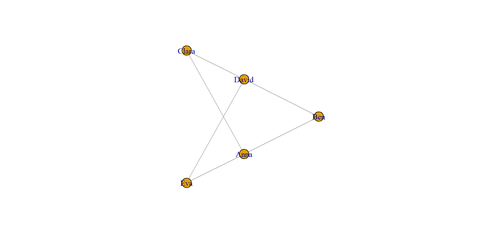
Die Grafik zeigt dieselben Informationen wie die Adjazenzmatrix, aber visuell.
Die Adjazenzmatrix ist gut für Berechnungen.
Die Netzwerkvisualisierung ist gut für Muster und Strukturen.
Netzwerk schöner darstellen
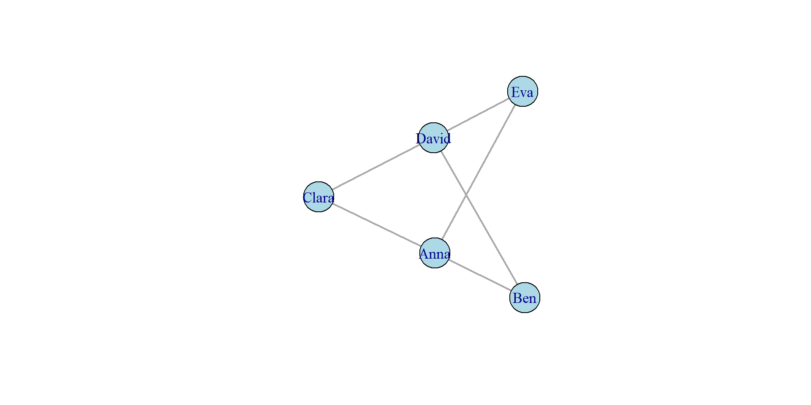
Wichtige Argumente:
vertex.color: Farbe der Knotenvertex.size: Größe der Knotenvertex.label.cex: Größe der Beschriftungedge.width: Dicke der Kanten
Zentrale Knoten erkennen
Ein einfacher Zentralitätswert ist der Grad.
Der Grad zählt, wie viele Verbindungen ein Knoten hat.
Zentrale Knoten hervorheben
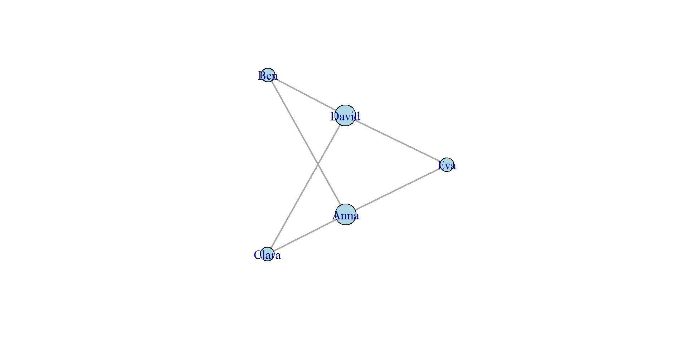
Größere Knoten haben mehr Verbindungen.
Layouts verändern
Das Layout bestimmt, wo die Knoten gezeichnet werden.
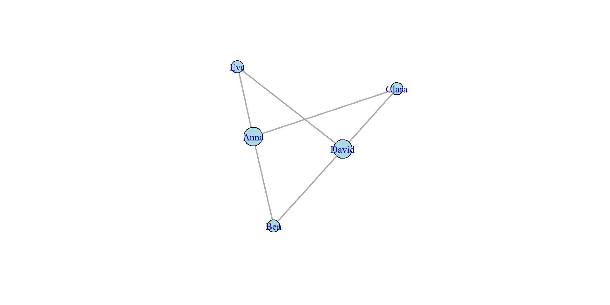
layout_with_fr() versucht, verbundene Knoten näher zusammen zu platzieren.
Wann sind Netzwerkvisualisierungen sinnvoll?
Netzwerkvisualisierungen helfen, wenn Beziehungen im Mittelpunkt stehen.
Beispiele:
- soziale Netzwerke
- Webseiten und Links
- Verkehrsnetze
- Kommunikationsnetzwerke
- gemeinsame Auftreten von Begriffen
Nicht einzelne Variablen stehen im Vordergrund, sondern Beziehungen.
Grenzen von Netzwerkvisualisierungen
Netzwerke können schnell unübersichtlich werden.
Problematisch sind:
- sehr viele Knoten
- sehr viele Kanten
- überlappende Beschriftungen
- Layouts, die unterschiedlich aussehen können
Bei großen Netzwerken sind Kennzahlen oft wichtiger als die reine Grafik.
Übung: Netzwerkvisualisierung
Erstellen Sie mit igraph ein kleines Netzwerk.
- Erstellen Sie eine Kantenliste mit mindestens sechs Kanten.
- Erzeugen Sie daraus ein Netzwerkobjekt mit
graph_from_data_frame(). - Geben Sie die Adjazenzmatrix aus.
- Visualisieren Sie das Netzwerk mit
plot(). - Berechnen Sie den Grad der Knoten mit
degree(). - Stellen Sie zentrale Knoten größer dar.
- Probieren Sie mindestens zwei Layouts aus.
05 Daten visualisieren